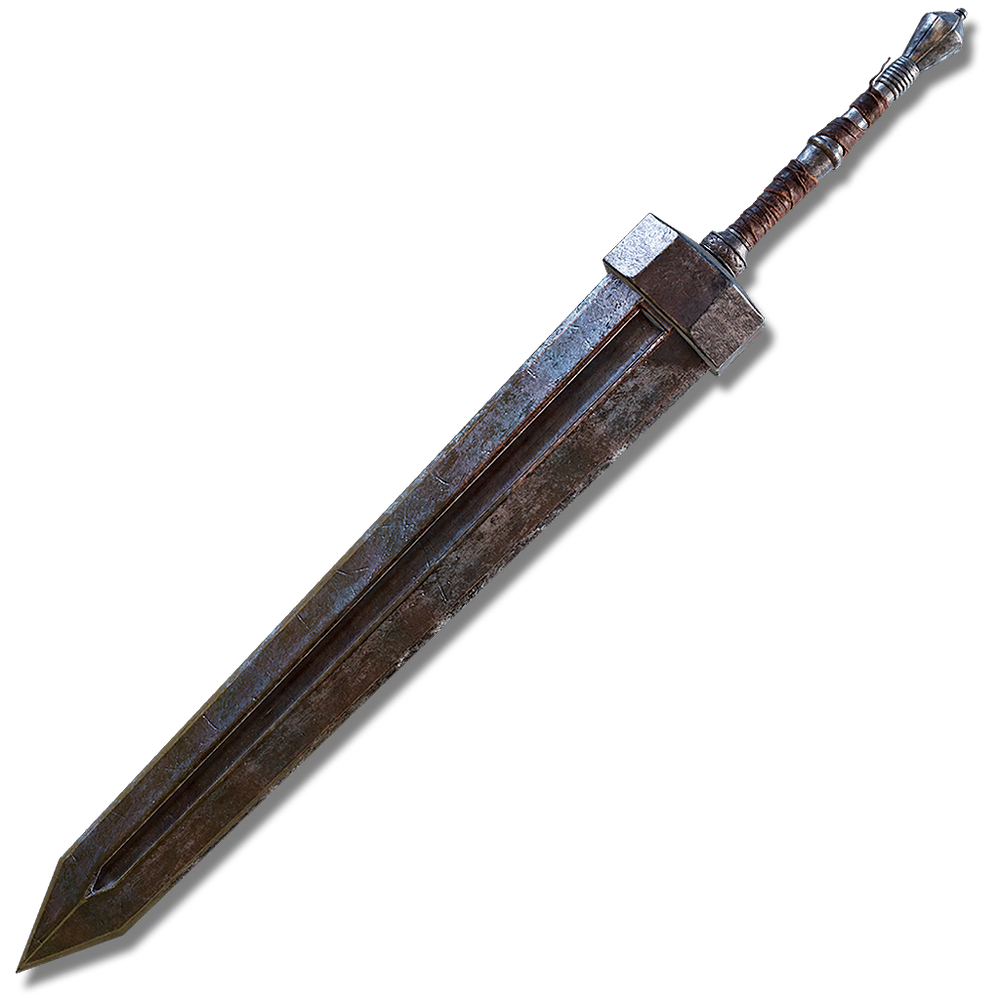
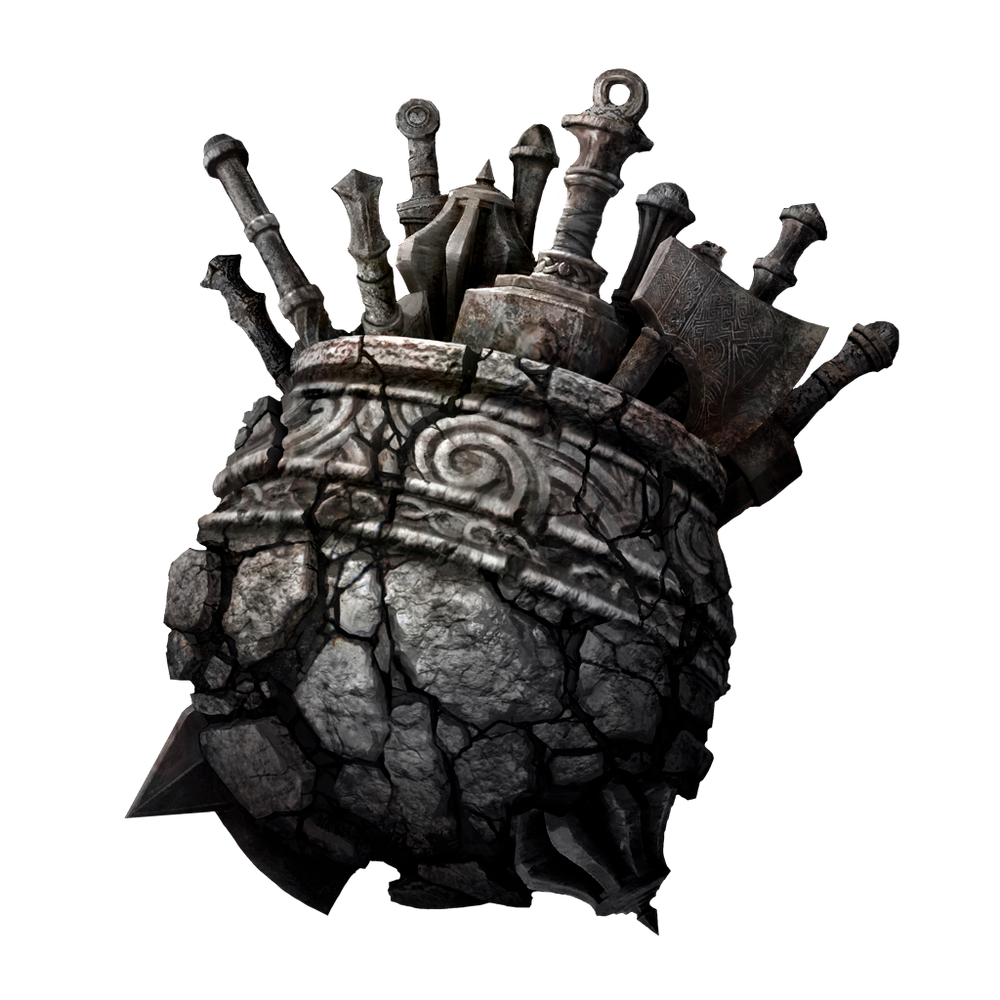
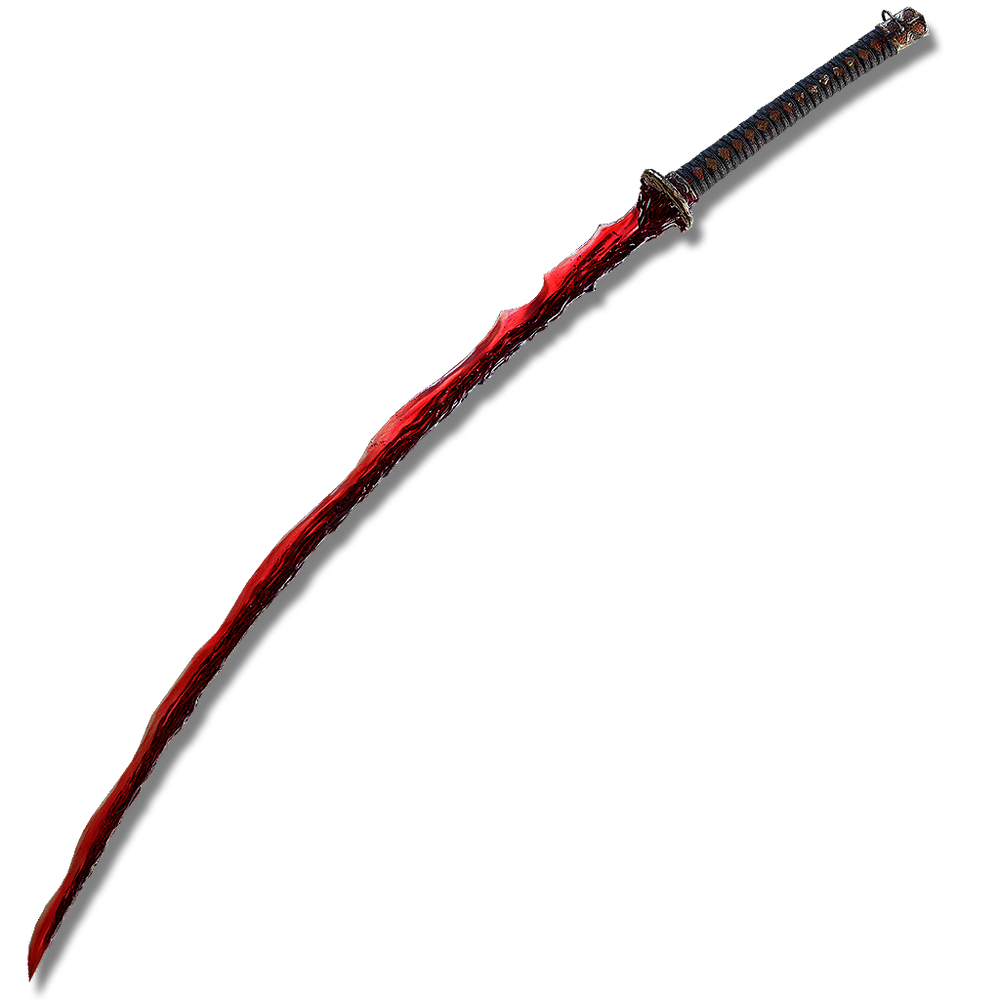
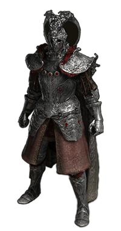
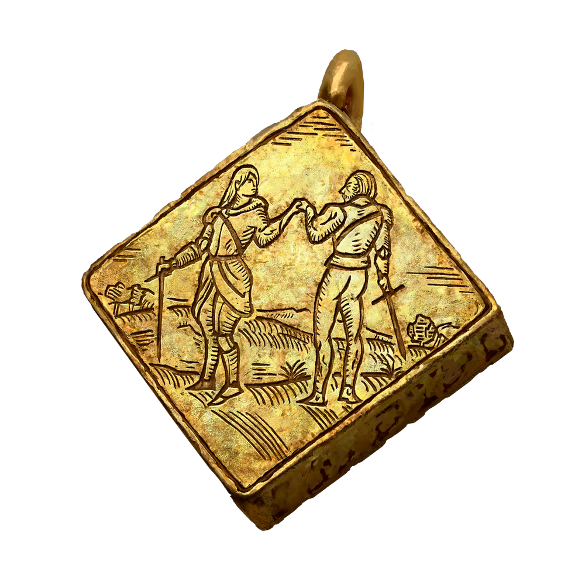
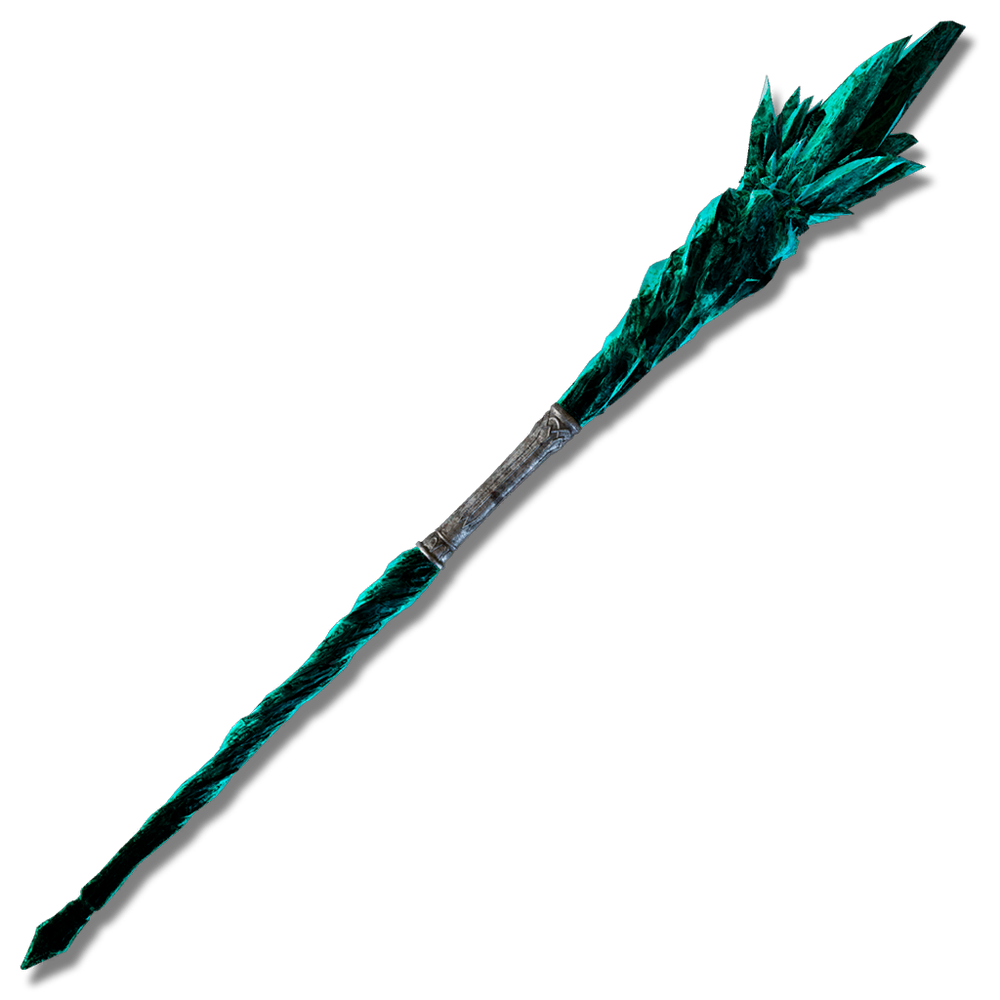
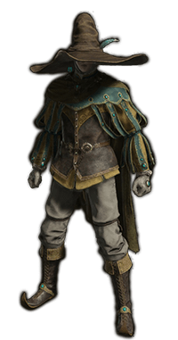
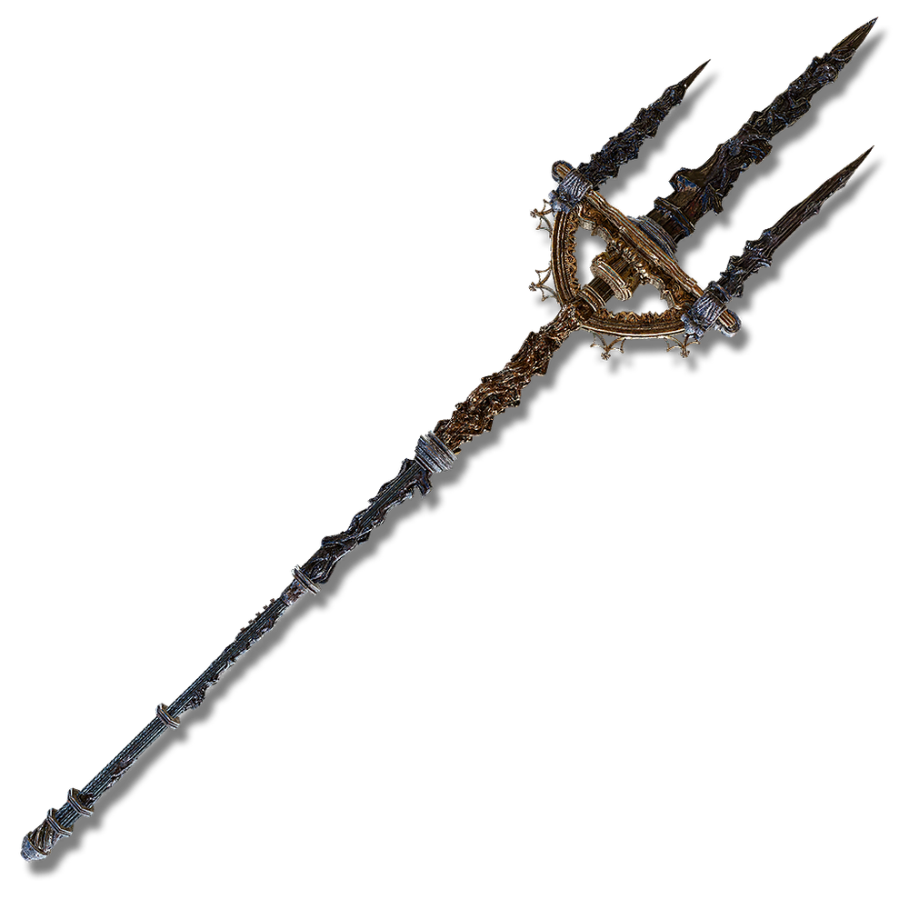
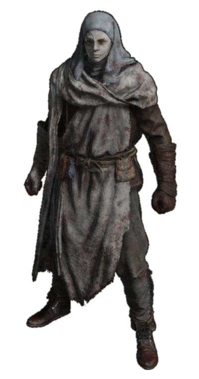

Greatsword

The Greatsword is located inside a coffin carriage chest on the western side of the Caelid Region, along the road past the Rotview Balcony and northwest of the Caelid Ruins. Be wary of the scavenging giant dogs nearby, as they can be deadly if confronted all at once—approach the carriage with caution.
Bullgate Armor
You can acquire the Bullgoat Set after defeating the powerful Great Horned Tragoth in the Altus Plateau. This battle takes place during the interconnected questlines of Tanith and Patches, adding depth to your journey. Be ready for a challenging encounter, as Tragoth guards this sought-after armor set, known for its exceptional poise and defensive capabilities.
Great-Jar’s Arsenal

The Great-Jar's Arsenal is obtained from the Great Jar in front of a colosseum in western Caelid's Dragonbarrow, reachable via the Deep Siofra Well. To earn it, summon and defeat three randomly chosen Great Jar Knights with red summon signs. Each knight wields powerful legendary weapons, so prepare for a challenging fight without dying.
Rivers of Blood

Rivers of Blood is a unique katana in Elden Ring, found exclusively in the hands of the invading NPC boss, Bloody Finger Okina. You can encounter Okina in the southern Mountaintops of the Giants, near the Church of Repose, where you’ll need to defeat him to claim this powerful weapon.
Hoslow's Set

Hoslow's Armor can be found in Elden Ring as all pieces of Hoslow's Set are dropped by Juno Hoslow, along with Hoslow's Petal Whip. Juno Hoslow is a hostile NPC you can invade after progressing through the Volcano Manor questline, and he drops the armor as part of the final contract.
Prosthesis-Wearer Heirloom

The Prosthesis-Wearer Heirloom can be obtained by completing Sage Gowry's questline in Caelid. First, defeat Commander O'Neil in the Swamp of Aeonia to acquire the Unalloyed Gold Needle. Then, return to Milicent, give her the needle, and rest to receive your reward.
Azur's Glintstone staff

Azur's Glintstone Staff is located in the Academy of Raya Lucaria, specifically on the second floor of the Church of the Cuckoo in Liurnia. You'll find it in a room guarded by a Page. Accessing the staff is straightforward if you've kicked down the ladder shortcut in the Church.
Spellblade Set

The Spellblade Set in Elden Ring enhances sorcery and features a unique look. To collect the complete set, defeat specific enemies and bosses, primarily found in areas like the Raya Lucaria Academy. Wearing this set boosts your magical abilities, making it ideal for sorcerers.
Godfrey Icon
The Godfrey Icon is obtained by defeating Godefroy the Grafted, a challenging boss in the Golden Lineage Evergaol, located in the southern Altus Plateau, just below the Grand Lift of Dectus. After defeating Godefroy, you’ll receive the Godfrey Icon, which enhances your charged spells and incantations, making it a valuable asset for magic users.
Mohgwyn's Sacred Spear

Mohgwyn's Sacred Spear can be obtained from Finger Reader Enia in exchange for the Remembrance of the Blood Lord. This remembrance is earned by defeating Mohg, Lord of Blood, the Shardbearer Boss located at the top of Mohgwyn's Palace.
War Surgeon Set

The War Surgeon Set is a complete armor set in *Elden Ring* that you can obtain by defeating all three Nameless White Mask invaders in Mohgwyn Palace, located in the Siofra River region. This set consists of the White Mask, War Surgeon Gown, War Surgeon Gloves, and War Surgeon Trousers, making it a distinctive choice for those seeking a unique look and enhanced protection.
Lord of Blood’s Exultation
The Lord of Blood's Exultation can be acquired by defeating Esgar, Priest of Blood, a boss located in the mini dungeon of Leyndell Catacombs. This dungeon is situated deep below Leyndell, Royal Capital, within the Subterranean Shunning-Grounds. To find the entrance, look for it at the bottom of a large room filled with pipes, where Giant Crayfish patrol the muddy floor.
Blasphemous blade
The Blasphemous Blade can be obtained from Finger Reader Enia in exchange for the Remembrance of the Blasphemous. This remembrance is earned by defeating the Shardbearer Boss, Rykard, Lord of Blasphemy, who rules over the Volcano Manor in Mt. Gelmir.
Haligtree Knight Set
The Haligtree Knight Set is a complete attire found in *Elden Ring*, located in the room above the Elphael Inner Wall grace site in the Haligtree. This set includes the Haligtree Knight Helm, Haligtree Knight Armor, Haligtree Knight Gauntlets, and Haligtree Knight Greaves, making it a striking choice for those seeking both style and protection.
Radagon's Soreseal
Radagon's Soreseal can be found at Fort Faroth, situated on the eastern cliffs of Caelid's Dragonbarrow region. This talisman enhances several attributes, making it a valuable item for builds focused on strength and resilience.